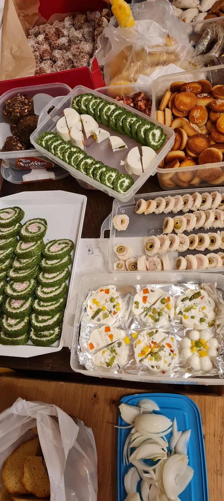

Bila je gužva
Srijeda 21.12.2022. ostat će zapamćena po gužvi i masi ljudi koja se nagurala u prostor u Klaićevoj 42/1.

Kako je i najavljeno, u srijedu 21. 12 održali smo veliki tulum i predstavili novi broj našeg Velebitena.
Krenulo je druženjem najmlađih (ili najsitnijih) Velebitaša. Crtanje i bojanje božićnih ukrasa i tema bilo je lakše uz božićni repertoar pjesama i neizostavni prilog bez kojeg mališani ne mogu- pomfrit, kečap i majoneza. Da toga uvijek bide na stolu, bez prestanka su brinuli Ličko i Goga.
U jednom trenutku pojavio se i Djed Mraz sa oversize vilenjakom pa su se klinci i Djed malo popričali o Božiću i poklonima.
Iza sedam došao je red i na "malo" starije Velebitaše koji su kapali jedni za drugim pa je onaj glavni dio mogao početi.
Novi Velebiten predstavili su Marijan Sutlović kao predsjednik PDSV, glavni urednik Ivor Janković i grafički" Marjan Prpić.
Podsjetio nas je tako Sutla da ponosno guramo Velebiten već trideset i drugu godinu za redom i da je to veliki uspjeh. Zahvalio se svima koji su sudjelovali u stvaranju novog broja ali i svih prijašnjih.
Ivor je istaknuo da iako smo planirali, ipak nismo Velebiten uvrstili u HRČAK (portal hrvatskih znanstvenih i stručnih časopisa) iz razloga što bi se unificiranjem članaka koji bi se morali pisati pod određenim uvjetima izgubila ona draž i osobnost koju ima Velebiten i autori koji za njega pišu. Naglasio je kako će se uskoro, za nekoliko mjeseci na novom web portalu PDSV moći pronaći svi dosadašnji brojevi Velebitena u digitalnom obliku (.pdf) i tako konačno postati dostupni svima.
Luka (grafički), kratko je rekao da "Velebiten ima dušu", (u nekim malim detaljima to ćete svakako primjetiti čim krenete sa čitanjem). Uz još jedan kratki dodatak koji nam pojašnjava razliku između književnih tradicionalista (koji vole knjige na papiru) i modernista (pobornika digitalnih publikacija) - "Ajde probajte pomirisat pdf. Ne može. Nema ništa bolje od mirisa knjige koja je netom izašla iz tiskare" :)
A da je novi Velebiten, jedna pristojna knjiga, to ćete vidjeti već čim ga primite u ruke. Nije ni čudo što ih se već ove večeri prodalo u velikom broju. Naklada i ovog broja je tek 200 primjeraka i prodaje se po cijeni od samo 50,00 kn.
Ako mislite da je puno - nije. Jer ovih preko 160 stranica odličnih članaka i vrhunskih fotografija na sjajnom papiru vrijedi svake lipe (dok ih još imamo) posebice stoga što je cijena daleko manja od one koliko nas košta tiskanje po komadu. Sve to treba cijeniti.
Nakon predstavljanja Velebitena tulum je mogao početi, a uskoro su se prostorije napunile poznatim i nepoznatim ljudima, iz svih odsjeka. Mali drveni pročelnički stol tradicionalno je dobio privremenu funkciju nosača hrane, a na velikom se uskoro narezala torta jer smo proslavili i jedan rođendan. Sve u svemu, lijepo i veselo. Onako velebitaški.
P.S. Sorry što nema više fotki, ali ako se pojave negdje drugdje, ubacit ćemo ih. :)
Povezani članci: Novi Velebiten!
Pogled na mali pročelnički stol Tako je i Snješko postao crveno zeleni Iznenađenje večeri. Samo mi imamo oversize vilenjaka Goga i Ličko - duo za sve - od ekspedicije do pečenja pomfrita i palačinki Jer ne možeš crtat ako nema ovoga Sutla, Ivor i Luka u predstavljanju novog Velebitena Ljudi sve više i više Pjesma i torta za Taidu